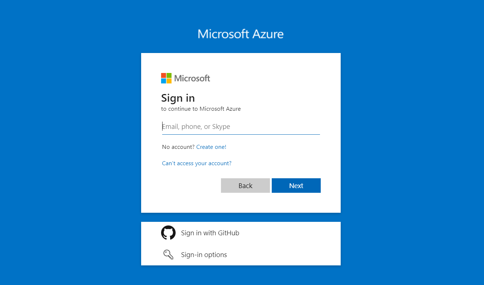
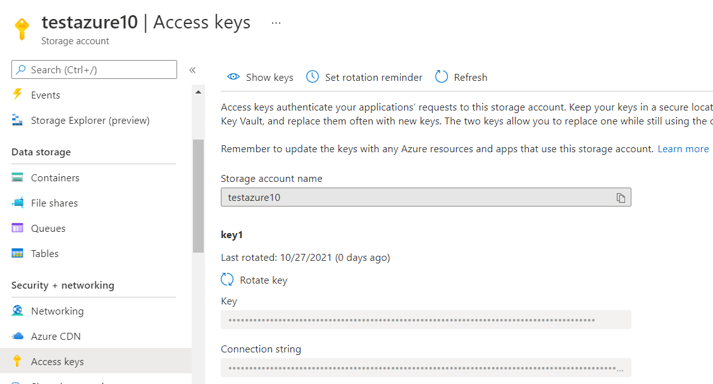
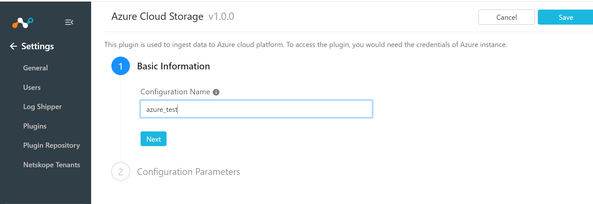
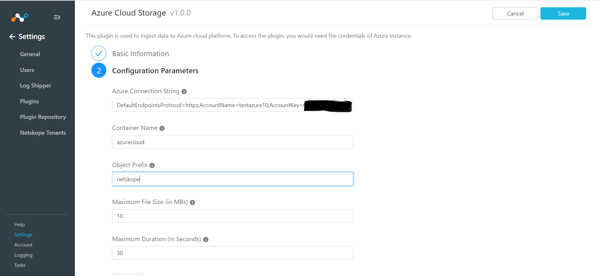
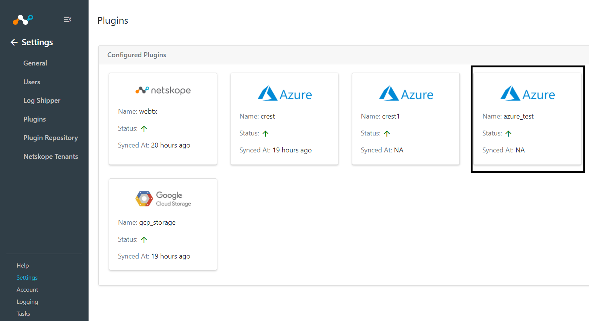
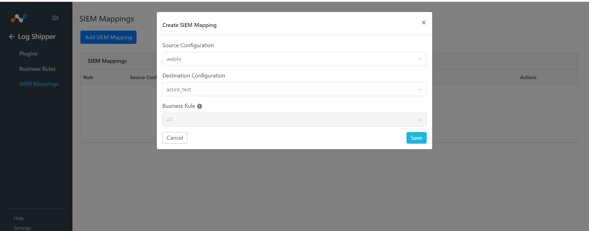
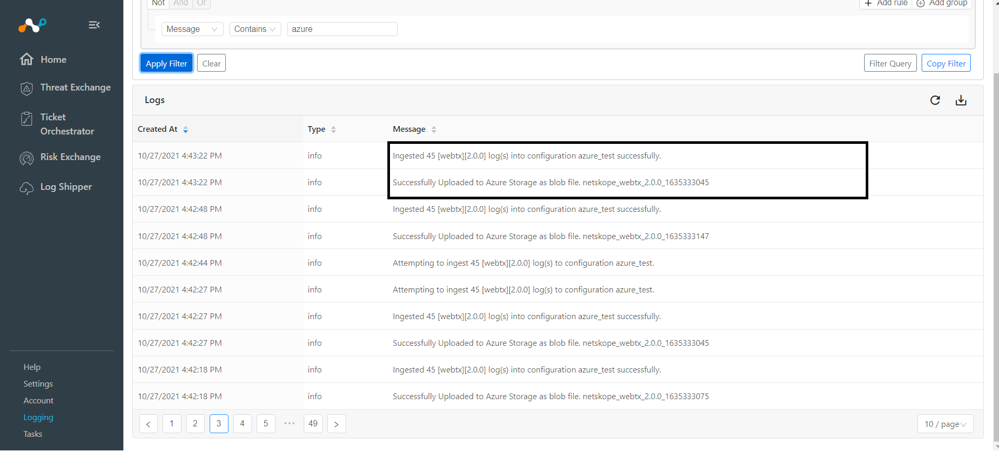
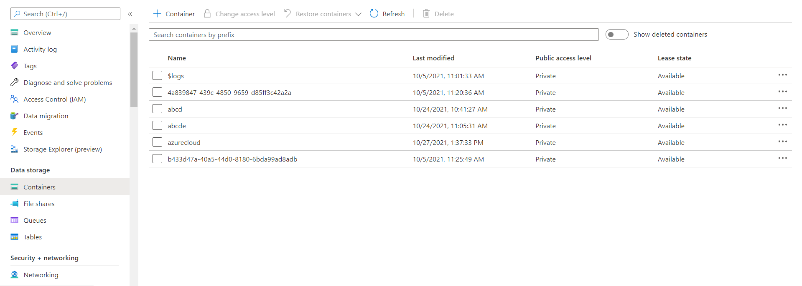
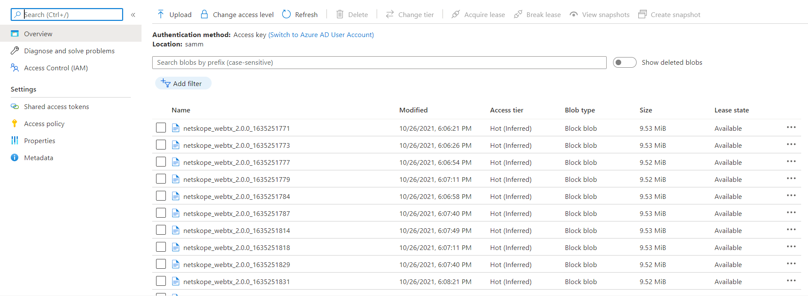

Azure Storage Plugin for Log Shipper
This document explains how to configure Azure Cloud Storage with the Log Shipper module of the Netskope Cloud Exchange platform. This integration allows pushing the data and creating blobs inside the container in Azure Blob Storage.
To complete this configuration, you need:
A Netskope Tenant (or multiple, for example, production and development/test instances).
A Netskope Cloud Exchange tenant with the Log Shipper module already configured.
An Azure Cloud instance.
Configure an Azure Cloud account.
Configure the Azure Cloud Storage plugin.
Configure Log Shipper SIEM mappings.
Validate the plugin.
Go to your Azure instance https://portal.azure.com/.
 Log in to your Azure Cloud instance.

Click on Storage Accounts, Click + Create and provide a unique Storage Account name, and then click on Review + Create. Shortly, a Storage Account will be created and deployment will be completed.
Click on Home, and go to Storage Accounts, Search for your storage account.
In the left pane, under Security + networking, click on Access Keys and copy the connection string, it will be required when configuring the Azure Cloud plugin.

Go to Settings and click Plugins.
Select the Azure Cloud Storage box to open the plugin creation dialog.
Enter a Configuration Name.
 Click Next.
 Enter your Azure Connection String, Container Name, Object Prefix, Minimum File Size, and Minimum Duration.
Container names must start with a letter or number, and can contain only letters, numbers, and the dash character.
Every dash character must be immediately preceded and followed by a letter or number; consecutive dashes are not permitted in container names.
All letters in a container name must be lowercase.
Container names must be from 3 through 63 characters long.
Click Save.

Go to Log Shipper, click SIEM Mappings and then Add SIEM Mapping.
 Select Source Configuration, and Destination Configuration.
Click Save.

In order to validate the configuration, you must have Azure instance and/or SIEM mappings.
To validate from Netskope Cloud Exchange:
Go to Logging. Logs will be seen regarding File name and data ingested into Azure.
|  |
To validate Azure Storage Plugin:
In your Azure instance From Storage accounts.
Go to Storage Accounts and search your storage account from the list.
In the left pane, under Data Storage, click on Containers. The container name which has been given while configuring the plugin would be seen in the list. If the Container has already been there, files will be appended, else a new Container would be created and then files will be pushed.
 Click on a Container Name and files pushed into Azure will be seen, and by clicking on the file, the Download option appears to view the content locally.
